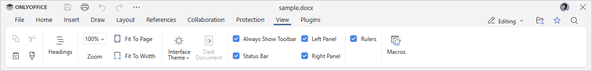
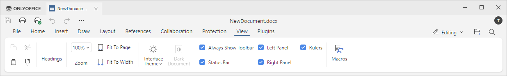

Kartica Prikaz
Kartica Prikaz u Uređivaču dokumenata omogućava upravljanje izgledom dokumenta dok na njemu radite.
Odgovarajući prozor Online Uređivača dokumenata:

Odgovarajući prozor Desktop Uređivača dokumenata:

Mogućnosti prikaza dostupne na ovoj kartici:
- Naslovi omogućavaju prikaz i navigaciju po naslovima u vašem dokumentu.
- Zumiranje omogućava uvećavanje i umanjivanje prikaza dokumenta.
- Prilagodi stranici omogućava skaliranje stranice tako da ceo prikaz bude vidljiv na ekranu.
- Prilagodi širini omogućava skaliranje stranice da stane u širinu ekrana.
- Tema interfejsa omogućava promenu teme interfejsa izborom opcija Ista kao u sistemu, Svijetla, Klasik svetla, Tamna, Kontrastna tamna, Siva, Modern svetla ili Modern tamna.
- Opcija Tamni dokument postaje aktivna kada je omogućen Tamni, Kontrastni tamni ili Moderni tamni režim teme. Klikom na nju tamni se i radni prostor.
Sledeće opcije omogućavaju podešavanje elemenata za prikaz ili sakrivanje. Označite opcije da biste ih prikazali:
- Uvek prikazuj alatnu traku da bi gornja alatna traka bila stalno vidljiva.
- Statusna traka da bi statusna traka bila stalno vidljiva.
- Levi panel da bi levi panel bio vidljiv.
- Desni panel da bi desni panel bio vidljiv.
- Lenjiri da bi lenjiri bili stalno vidljivi.
Dugme Makroi omogućava otvaranje prozora za kreiranje i pokretanje sopstvenih makroa. Za više informacija o makroima pogledajte našu API dokumentaciju.